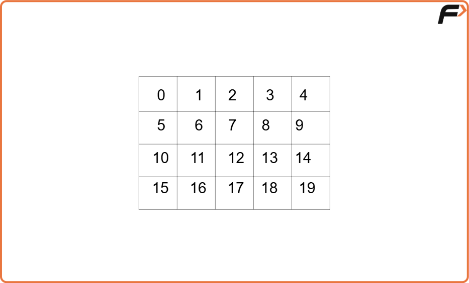
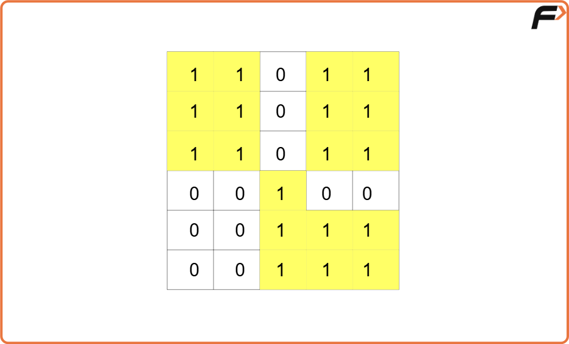
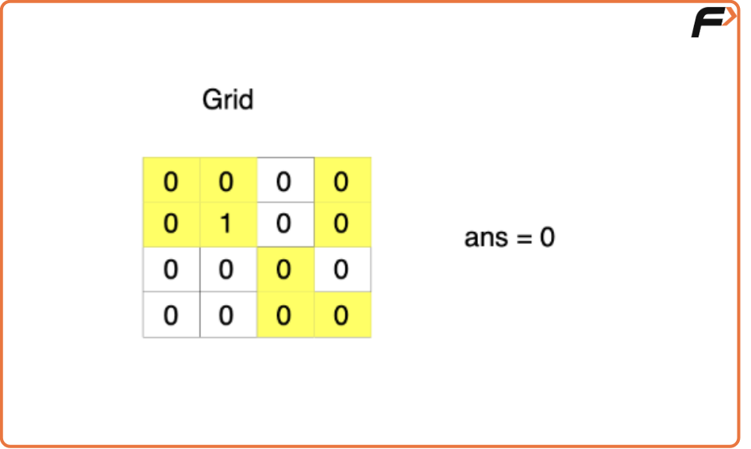
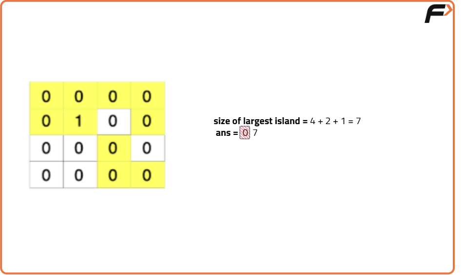
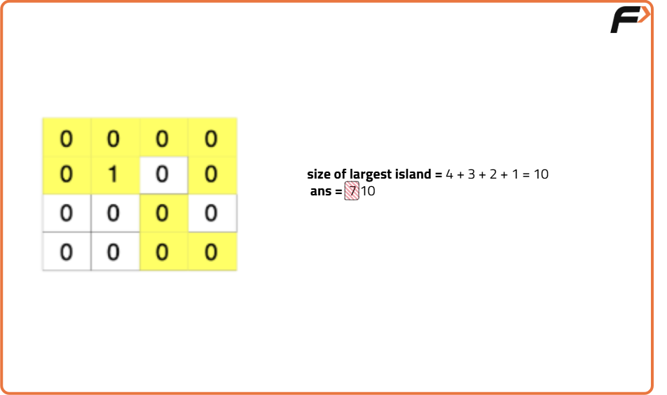
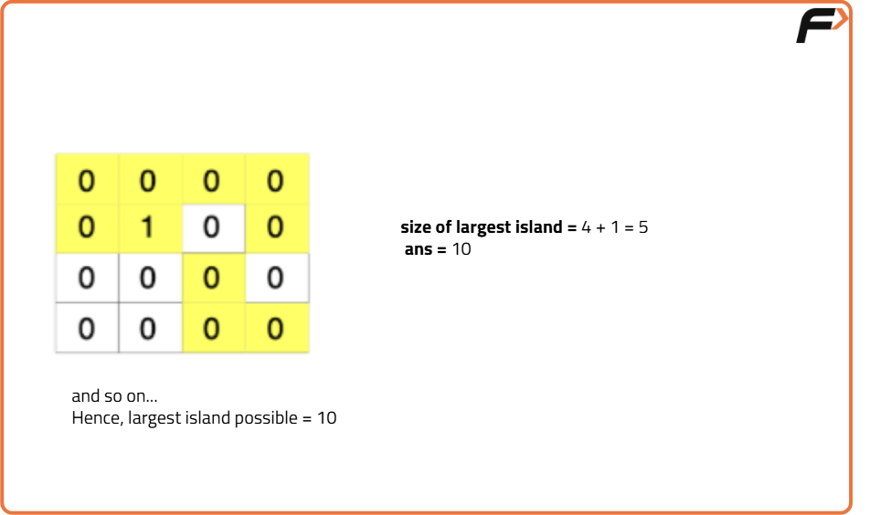

Making a Large Island - DSU: G-52
Problem Statement:
Given an n x n binary matrix grid, it is allowed to change at most one 0 to 1. A group of connected 1s forms an island, where two 1s are connected if they share one of their sides.
Return the size of the largest island in the grid after applying this operation.
Examples
Example 1: Input: grid = [[1,0], [0,1]] Output: 3 Explanation: We change one of the 0s to 1, connecting the two existing 1s, which results in an island with a maximum area of 3. Example 2: Input: grid = [[1, 1], [1, 1]] Output: 4 Explanation: The largest island already exists with size 4, as all cells are already connected.
Disclaimer: Here is the practice link to help you assess your knowledge better. It's highly recommend trying to solve it before looking at the solution.
Approach
Algorithm
- Understanding:
- Each time a cell with a 0 is turned into 1, it forms an edge with its four neighboring cells (islands) if they exist. This makes the graph dynamic in nature.
- We can efficiently manage these dynamic edges using the Disjoint Set data structure (Union-Find), which helps with merging islands and tracking their sizes.
- How to store cells as nodes in the Disjoint Set?
- The cells can be numbered sequentially. For a cell at coordinates (i, j), the node number is given by
Node number = i * n + j, wherenis the number of columns in the grid. - Edge Cases:
- If all cells in the grid are 1, only one island will be formed, and the size of the island will be the answer.
- If a 0 is turned to 1, we need to check its neighbors to find the size of the island formed. But to avoid double counting an island, we store the ultimate parents of neighboring islands in a set to ensure each island is counted once.
- Approach:
- Create a Disjoint Set data structure to manage connected components (islands) in the grid, where each cell is a separate component initially.
- Traverse through the grid to identify initial islands (connected 1s) and perform union operations to merge adjacent land cells into the same component using the union by size method.
- Traverse the grid again to consider each 0 cell, and determine the potential island size if this 0 is changed to 1.
- For each 0 cell, check all its neighboring cells to find unique components (using ultimate parents) and calculate the combined size of these components.
- Keep track of the maximum island size encountered during the above calculations.
- Handle edge cases, like if there are no 0 cells in the grid, by checking the sizes of existing islands.
- Return the size of the largest possible island after changing at most one 0 to 1.






Code
#include <bits/stdc++.h>
using namespace std;
class DisjointSet {
public:
/* To store the ranks, parents and
sizes of different set of vertices */
vector<int> rank, parent, size;
// Constructor
DisjointSet(int n) {
rank.resize(n + 1, 0);
parent.resize(n + 1);
size.resize(n + 1);
for (int i = 0; i <= n; i++) {
parent[i] = i;
size[i] = 1;
}
}
// Function to find ultimate parent
int findUPar(int node) {
if (node == parent[node])
return node;
return parent[node] = findUPar(parent[node]);
}
// Function to implement union by rank
void unionByRank(int u, int v) {
int ulp_u = findUPar(u);
int ulp_v = findUPar(v);
if (ulp_u == ulp_v) return;
if (rank[ulp_u] < rank[ulp_v]) {
parent[ulp_u] = ulp_v;
}
else if (rank[ulp_v] < rank[ulp_u]) {
parent[ulp_v] = ulp_u;
}
else {
parent[ulp_v] = ulp_u;
rank[ulp_u]++;
}
}
// Function to implement union by size
void unionBySize(int u, int v) {
int ulp_u = findUPar(u);
int ulp_v = findUPar(v);
if (ulp_u == ulp_v) return;
if (size[ulp_u] < size[ulp_v]) {
parent[ulp_u] = ulp_v;
size[ulp_v] += size[ulp_u];
}
else {
parent[ulp_v] = ulp_u;
size[ulp_u] += size[ulp_v];
}
}
};
// Solution class
class Solution{
private:
// DelRow and delCol for neighbors
vector<int> delRow = {-1, 0, 1, 0};
vector<int> delCol = {0, 1, 0, -1};
/* Helper Function to check if a
pixel is within boundaries */
bool isValid(int &i, int &j, int &n) {
// Return false if pixel is invalid
if(i < 0 || i >= n) return false;
if(j < 0 || j >= n) return false;
// Return true if pixel is valid
return true;
}
/* Function to add initial islands to
the disjoint set data structure */
void addInitialIslands(vector<vector<int>> grid,
DisjointSet &ds, int n) {
// Traverse all the cells in the grid
for (int row = 0; row < n ; row++) {
for (int col = 0; col < n ; col++) {
// If the cell is not land, skip
if (grid[row][col] == 0) continue;
// Traverse on all the neighbors
for (int ind = 0; ind < 4; ind++) {
// Get the coordinates of neighbor
int newRow = row + delRow[ind];
int newCol = col + delCol[ind];
// If the cell is valid and a land cell
if (isValid(newRow, newCol, n) &&
grid[newRow][newCol] == 1) {
// Get the number for node
int nodeNo = row * n + col;
// Get the number for neighbor
int adjNodeNo = newRow * n + newCol;
/* Take union of both nodes as they
are part of the same island */
ds.unionBySize(nodeNo, adjNodeNo);
}
}
}
}
}
public:
// Function to get the size of the largest island
int largestIsland(vector<vector<int>>& grid) {
// Dimensions of grid
int n = grid.size();
// Disjoint Set data structure
DisjointSet ds(n*n);
/* Function call to add initial
islands in the disjoint set */
addInitialIslands(grid, ds, n);
// To store the answer
int ans = 0;
// Traverse on the grid
for (int row = 0; row < n; row++) {
for (int col = 0; col < n; col++) {
// If the cell is a land cell, skip
if (grid[row][col] == 1) continue;
/* Set to store the ultimate parents
of neighboring islands */
set<int> components;
//Traverse on all its neighbors
for (int ind = 0; ind < 4; ind++) {
// Coodinates of neigboring cell
int newRow = row + delRow[ind];
int newCol = col + delCol[ind];
if (isValid(newRow, newCol, n) &&
grid[newRow][newCol] == 1) {
/* Perform union and store
ultimate parent in the set */
int nodeNumber = newRow * n + newCol;
components.insert(ds.findUPar(nodeNumber));
}
}
// To store the size of current largest island
int sizeTotal = 0;
// Iterate on all the neighborinh ultimate parents
for (auto it : components) {
// Update the size
sizeTotal += ds.size[it];
}
// Store the maximum size of island
ans = max(ans, sizeTotal + 1);
}
}
// Edge case
for (int cellNo = 0; cellNo < n * n; cellNo++) {
// Keep the answer updated
ans = max(ans, ds.size[ds.findUPar(cellNo)]);
}
// Return the answer
return ans;
}
};
int main() {
vector<vector<int>> grid = {
{1,0},
{0,1}
};
// Creating instance of Solution class
Solution sol;
/* Function call to get the
size of the largest island */
int ans = sol.largestIsland(grid);
// Output
cout << "The size of the largest island is: " << ans;
return 0;
}Complexity Analysis
Time Complexity: O(N2) using nested loops, and within the loops, all the operations take constant time.
Space Complexity: O(N2), as the Disjoint set storing N2 nodes (cells) will take up 2 * N2 space due to parent and size arrays.